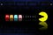
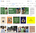

From W to Acquired


In my born language, the W letter is there in so many words that express the idea of spreading, growth, and community and it is the same I guess for your native language. If you speak English I am almost sure. take the example of law, world, wide, width, whole … Language is for sure a concept that explains and helps us understands not only how our brain works but also highlights the fact that there is maybe a fundamental law that defines how information spread, how ideas go from person to person until it gets adopted by the crowd. Actually, the whole world is driven by such kind of thing until the emergence of the medium of the internet that is the WWW. this letter W is for sure the end of the English alphabet but it can be the starting point of this fantastic piece of technology that google and its mere company Alphabet will try hard to own. It is up to you to decide if you gonna sell or not. So many bootstrappers like you had sold bootstrapped ventures and got acquired like this. why not You?
PS: one of my friend and brother can teach you my native language online. Reach out to me if you want to learn it.
